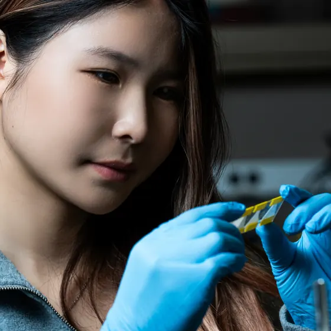
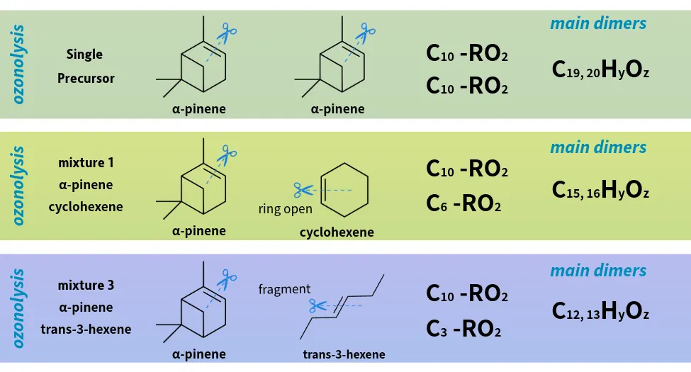
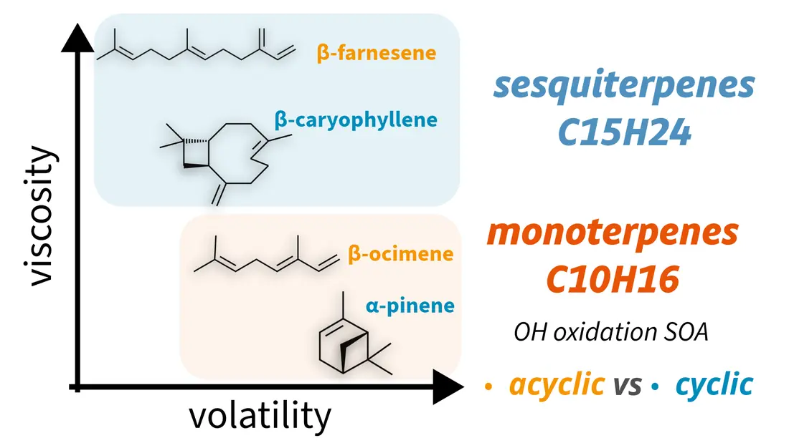
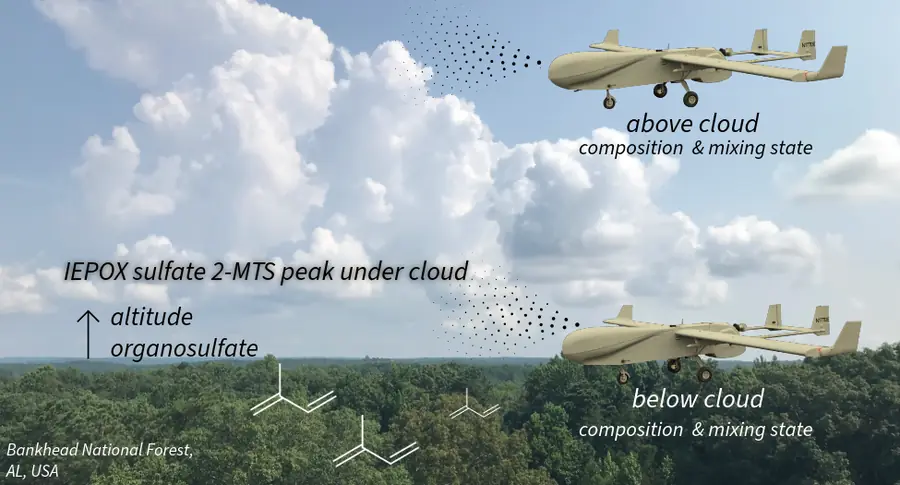
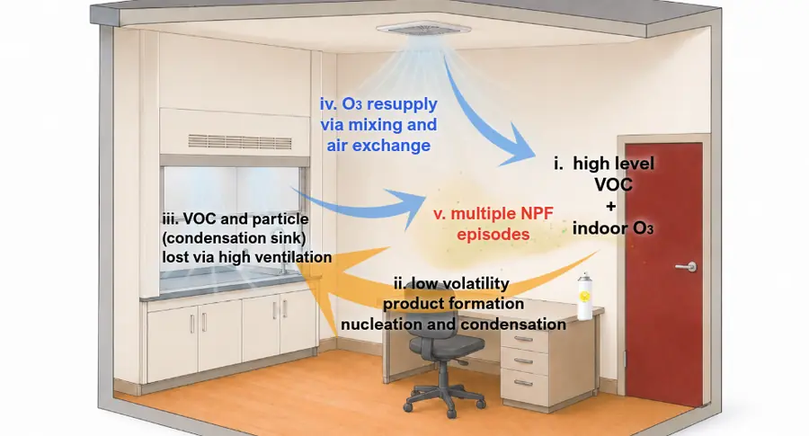

Atmospheric chemist studying how organic aerosol forms and evolves, from indoor air to wildfire smoke to the base of clouds.

I am a PhD candidate in Chemistry at the University of California, Irvine, advised by Prof. Sergey A. Nizkorodov and Prof. Celia L. Faiola. My research asks how secondary organic aerosol forms from the mixtures of volatile organic compounds found in real air, how its chemical composition sets physical properties such as viscosity and volatility, and what those properties mean for air quality, health, and climate.
I follow these questions across very different settings, from smog chamber experiments with biogenic and anthropogenic precursors, to consumer product sprays indoors, to biomass burning smoke, to airborne samples collected above and below clouds by the ArcticShark uncrewed aircraft. My work centers on high-resolution and single-particle mass spectrometry, which I used extensively during my PhD internship at the Environmental Molecular Sciences Laboratory, Pacific Northwest National Laboratory.
I am a recipient of the F. Sherwood Rowland Graduate Research Fellowship and the UCI Chemistry Graduate Dissertation Fellowship, and I expect to complete my PhD in June 2027.
Presenting indoor SOA formation from consumer product sprays at the AAAR Annual Conference in Pasadena, where I also serve as a Student Media Ambassador.
Received a Best Poster Award at the International Aerosol Conference in Xi’an for work on the viscosity and volatility of acyclic and cyclic terpene SOA.
Gave an invited seminar at the Nanjing–Helsinki Institute in Suzhou on SOA from single precursors to mixtures.
Awarded the 2026–27 UCI Chemistry Graduate Dissertation Fellowship.
Joined the International Summer School on Air-Climate-Health at Peking University.
Joined the DOE ARM Big Open Data Science Summer School at the National Weather Center in Norman, Oklahoma.
Published in ACS ES&T Air, showing that SOA from acyclic terpenes is more viscous and less volatile than SOA from their cyclic analogs.
SOA yields are usually measured one precursor at a time, while real air holds many VOCs oxidizing together. In OH oxidation of D-limonene and myrcene, the acyclic monoterpene did not suppress SOA formation from the cyclic one. In α-pinene ozonolysis with anthropogenic co-VOCs, cross-reactions between peroxy radicals from different precursors changed SOA composition, tracked through dimer formation by UPLC-HRMS and KinSim modeling.

Particle phase state governs evaporation, multiphase reactivity, and water uptake. Single-particle evaporation kinetics measured by miniSPLAT showed that SOA from acyclic terpenes is more viscous and less volatile than SOA from their cyclic analogs. For β-caryophyllene and β-farnesene ozonolysis, precursor concentration and molecular structure jointly control evaporation behavior.

ArcticShark samples collected above and below cloud base at the ARM Bankhead National Forest site, analyzed by nanoDESI-HRMS, SEM, and STXM, reveal a chemically distinct aerosol layer adjacent to clouds, with implications for how aerosol composition is represented in aerosol-cloud interactions.

Volatile chemical products are a major source of reactive organic carbon in buildings. Sprays used under realistic indoor ozone levels form SOA rapidly, and I characterize the resulting new particle formation, particle volatility, and the effect of ventilation.

Pine needle combustion at controlled temperatures produces aerosol whose composition and physical properties depend on both burning temperature and particle size, resolved with nanoDESI-HRMS, SEM, and miniSPLAT.
Methods include environmental chamber and oxidation flow reactor experiments, UPLC-HRMS (Orbitrap), nanoDESI-HRMS, single-particle mass spectrometry (miniSPLAT), PTR-ToF-MS, TD-GC-QToF-MS, electron and X-ray microscopy, and kinetic modeling with KinSim.
Secondary organic aerosol from OH oxidation of acyclic terpenes is more viscous and less volatile than that of their cyclic analogs Liu, S.; Moffet, C.; Vandergrift, G. W.; Cheng, Z.; China, S.; Shrivastava, M.; Nizkorodov, S. A.; Zelenyuk, A.; Faiola, C. L. ACS ES&T Air 3, 83–94.
Demonstration of an automated system for vertical profiles of volatile organic compounds Vandergrift, G. W.; Liu, S.; Liyu, A. V.; Cheng, Z.; et al.; China, S. ACS Earth and Space Chemistry 9, 2597–2606.
Secondary organic aerosol from OH-initiated oxidation of mixtures of D-limonene and myrcene Liu, S.; Galeazzo, T.; Valorso, R.; Shiraiwa, M.; Faiola, C. L.; Nizkorodov, S. A. Environmental Science & Technology 58, 13391–13401.
Highly acidic conditions drastically alter the chemical composition and absorption coefficient of α-pinene secondary organic aerosol Wong, C.; Liu, S.; Nizkorodov, S. A. ACS Earth and Space Chemistry 6, 2983–2994.
Vertically resolved measurements reveal a chemically distinct aerosol layer adjacent to clouds Liu, S.; Vandergrift, G. W.; Cheng, Z.; Lata, N. N.; Rahman, A.; Sola, V.; Lai, Z.; Mansoura, X.; Riemer, N.; Knopf, D. A.; Schmid, B.; Marcus, M. A.; Zhang, D.; Zelenyuk, A.; Mei, F.; Faiola, C. L.; Nizkorodov, S. A.; China, S. Submitted to Environmental Science & Technology.
Effects of cross-reactions on chemical composition and properties of particulate matter produced by oxidation of a mixture of anthropogenic and biogenic volatile organic compounds Liu, S.; Charmchi, A.; Faiola, C. L.; Nizkorodov, S. A. Submitted to ACS ES&T Air.
Rapid secondary organic aerosol formation from volatile chemical product sprays under realistic indoor ozone levels Liu, S.; Ijaz, A.; Cheng, Z.; Nizkorodov, S. A.; Faiola, C. L.; Shrivastava, M.; Zelenyuk, A.
Precursor concentration and molecular structure control the viscosity and volatility of secondary organic aerosol derived from sesquiterpene ozonolysis Liu, S.; Ijaz, A.; Nizkorodov, S. A.; Faiola, C. L.; Shiraiwa, M.; Zelenyuk, A.
Model Meets Reality, a cross-comparison of DP-SCREAM and WRF against ARM observations Powell, M.; Sun, Y.; Pappu, P.; Liu, S.; et al.; O’Brien, J. R. 2026 ARM Summer School project, Zenodo.
Graduate Student Researcher, University of California, Irvine Advisors Prof. Sergey A. Nizkorodov and Prof. Celia L. Faiola
PhD Intern, EMSL, Pacific Northwest National Laboratory, Richland, WA Advisors Dr. Alla Zelenyuk and Dr. Swarup China
Junior Specialist and Undergraduate Researcher, University of California, Irvine Advisor Prof. Sergey A. Nizkorodov
PhD in Chemistry, University of California, Irvine Expected June 2027
MS in Chemistry, University of California, Irvine
BS in Chemistry, cum laude, University of California, Irvine Minor in Psychology
Best Poster Award, International Aerosol Conference Xi’an, China
Selected participant, International Summer School on Air-Climate-Health Peking University, Beijing
Selected participant, DOE ARM Summer School National Weather Center, Norman, OK
Chemistry Graduate Dissertation Fellowship, UC Irvine
F. Sherwood Rowland Graduate Research Fellowship, UC Irvine
AAAR Conference Travel Award and UCI Chemistry Travel Award
Teaching Program Contribution Award, UCI Department of Chemistry
Secondary organic aerosol from structurally distinct volatile organic compounds, from single precursors to mixtures Invited seminar, Nanjing–Helsinki Institute, Suzhou, China
Size-resolved chemical composition and physical properties of biomass burning aerosol produced at different burning temperatures Pacifichem, Honolulu, HI
Precursor concentration and molecular structure influence the viscosity and volatility of SOA derived from sesquiterpene ozonolysis AAAR Annual Conference, Buffalo, NY
A comparative study on the evaporation kinetics and physical properties of acyclic and cyclic terpene SOA AAAR Annual Conference, Albuquerque, NM, and EMSL User Meeting, Richland, WA
Acyclic monoterpenes do not suppress SOA from cyclic monoterpenes AAAR Annual Conference, Portland, OR
Teaching Assistant, General Chemistry, UC Irvine
Teaching Assistant, Analytical Chemistry Laboratory, UC Irvine
AAAR Student Media Ambassador
Mentored two undergraduate researchers, a UCI Beckman Scholar and a UROP Fellowship awardee One became a co-author on a submitted manuscript
Certified UHPLC-PDA-HRMS (Orbitrap) operator, AirUCI